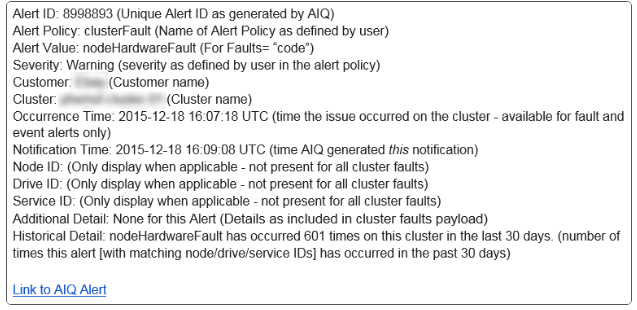

Get started with SolidFire Active IQ
Get started with SolidFire Active IQ
Alerts
 Suggest changes
Suggest changes
From the Alerts drop-down menu within All Clusters View, you can view the alert history, create and manage alert policies, and view and suppress cluster notifications.
Learn about or perform alerts-related tasks:
View alerts history
You can view the history for either unresolved or resolved alerts.
-
Select Alerts > History.
-
Select either the Unresolved or Resolved tab to view the history of alerts for the cluster.
-
(Optional) Select the icon to export the data to a CSV file.
Alerts history details
The History page in the Alerts drop-down menu within All Clusters View shows up to 10000 entries of alert history, including all unresolved alerts and alerts resolved in the last 30 days.
The following list describes the details that are available to you:
| Heading | Description |
|---|---|
Alert ID |
Unique ID for each alert. |
Triggered |
The time the alert was triggered in SolidFire Active IQ, not on the cluster itself. |
Last Notified |
The time the most recent alert email was sent. |
Resolved |
Shows if the cause of the alert has been resolved. |
Resolution Time |
The time an issue was resolved. |
Policy |
This is the user-defined alert policy name. |
Severity |
Severity assigned at the time the alert policy was created. |
Destination |
The email address or addresses selected to receive the alert email. |
Company |
Name of customer associated with the alert. |
Cluster |
Displays the cluster name for which the alert policy was added. |
Trigger |
The user-defined setting that triggered the alert. |
View alert policies
The Policies page in the Alerts drop-down menu within All Clusters View shows the following policy information for all clusters.
The following list describes the details that are available to you:
| Heading | Description |
|---|---|
Policy Name |
User-defined alert policy name. |
Destination |
Email address defined in the alert policy. |
Severity |
Severity assigned in the alert policy. |
Clusters |
Number and name of each cluster defined in the alert policy. Select the information icon to reveal associated clusters. |
Condition |
User-defined setting for when an alert should be triggered. |
Suppression Types |
Determines which alerts and events are suppressed. The following types are possible:
|
Actions |
Select the vertical drop-down menu for edit and delete options for the selected policy. |
Create an alert policy
You can create an alert policy to monitor information from the All Clusters View in SolidFire Active IQ. Alert policies allow you to be notified of a status or performance event with one or more clusters across an installation so that action can be taken in advance of, or in response to, a more serious event.
-
Select Alerts > Policies.
-
Select Create Policy.
-
Select an alert type from the Policy Type list. See Alert policy types.

There are additional policy-specific fields within the Create Policy dialog box depending on the policy type selected. -
Enter a name for the new alert policy.
Alert policy names should describe the condition the alert is being created for. Descriptive titles help identify the alert easily. Alert policy names are displayed as a reference elsewhere in the system. -
Select a severity level.

Alert policy severity levels are color coded and can be filtered easily from the Alerts > History page. -
Determine the type of suppression for the alert policy by selecting a type from Suppressible Types. You can select more than one type.
Confirm that the associations make sense. For example, you have selected Network Suppression for a network alert policy.
-
Select one or more clusters to include in the policy.

When you add a new cluster to your installation after you have created the policy, the cluster will not automatically be added to existing alert policies. You must edit an existing alert policy and select the new cluster you want to associate with the policy. -
Enter one or more email addresses to which alert notifications will be sent. If you are entering multiple addresses, you must use a comma to separate each address.
-
Select Save Alert Policy.
Alert policy types
You can create alert policies based on available policy types listed in the Create Policy dialog box from Alarms > Policies.
Available policy alerts include the following types:
| Policy Type | Description |
|---|---|
Cluster Fault |
Sends a notification when a specific type or any type of cluster fault occurs. |
Event |
Sends a notification when a specific event type occurs. |
Failed Drive |
Sends a notification when a drive failure occurs. |
Available Drive |
Sends a notification when a drive comes online in Available state. |
Cluster Utilization |
Sends a notification when the cluster capacity and performance being used is more than the specified percentage. |
Usable Space |
Sends a notification when usable cluster space is less than a specified percentage. |
Provisionable Space |
Sends a notification when provisionable cluster space is less than a specified percentage. |
Collector Not Reporting |
Sends a notification when the collector for SolidFire Active IQ that runs on the management node fails to send data to SolidFire Active IQ for the duration specified. |
Drive Wear |
Sends a notification when a drive in a cluster has less than a specified percentage of wear or reserve space remaining. |
iSCSI Sessions |
Sends a notification when the number of active iSCSI sessions is greater than the value specified. |
Chassis Resiliency |
Sends a notification when the used space of a cluster is greater than a user-specified percentage. You should select a percentage that is sufficient to give early notice before reaching the cluster resiliency threshold. After reaching this threshold, a cluster can no longer automatically heal from a chassis-level failure. |
VMware Alarm |
Sends a notification when a VMware alarm is triggered and reported to SolidFire Active IQ. |
Custom Protection Domain Resiliency |
When used space increases beyond the specified percentage of custom protection domain resiliency threshold, the system sends a notification. If this percentage reaches 100, the storage cluster does not have enough free capacity to self-heal after a custom protection domain failure occurs. |
Node Core/Crash Dump Files |
When a service becomes unresponsive and must be restarted, the system creates a core file or crash dump file and sends a notification. This is not the expected behavior during regular operations. |
Edit an alert policy
You can edit an alert policy to add or remove clusters from a policy or change additional policy settings.
-
Select Alerts > Policies.
-
Select the menu for more options under Actions.
-
Select Edit Policy.
The policy type and type-specific monitoring criteria are not editable. -
(Optional) Enter a revised name for the new alert policy.
Alert policy names should describe the condition the alert is being created for. Descriptive titles help identify the alert easily. Alert policy names are displayed as a reference elsewhere in the system. -
(Optional) Select a different severity level.
Alert policy severity levels are color coded and can be filtered easily from the Alerts > History page. -
Determine the type of suppression for the alert policy when it is active by selecting a type from Suppressible Types. You can select more than one type.
Confirm that the associations make sense. For example, you have selected Network Suppression for a network alert policy.
-
(Optional) Select or remove cluster associations with the policy.
When you add a new cluster to your installation after you have created the policy, the cluster is not automatically be added to existing alert policies. You must select the new cluster you want to associate with the policy. -
(Optional) Modify one or more email addresses to which alert notifications will be sent. If you are entering multiple addresses, you must use a comma to separate each address.
-
Select Save Alert Policy.
Delete an alert policy
Deleting an alert policy removes it permanently from the system. Email notifications are no longer sent for that policy and cluster associations with the policy are removed.
-
Select Alerts > Policies.
-
Under Actions, select the menu for more options.
-
Select Delete Policy.
-
Confirm the action.
The policy is permanently removed from the system.
View suppressed clusters
On the Suppressed Clusters page in the Alerts drop-down menu within the All Clusters View, you can view a list of clusters which have alert notifications suppressed.
NetApp Support or customers can suppress alert notifications for a cluster when performing maintenance. When notifications are suppressed for a cluster using upgrade suppression, common alerts that occur during upgrades are not sent. There is also a full alert suppression option that stops alert notification for a cluster for a specified duration. You can view any email alerts that are not sent when notifications are suppressed on the History page of the Alerts menu. Suppressed notifications resume automatically after the defined duration elapses. You can end suppression of notifications early by selecting "resume notifications" in the dropdown menu.
On the Suppressed Clusters page, you have the option to view the following information for Past, Active, and Future suppressions. The Past option shows the suppressions that ended in the last 90 days.
| Heading | Description |
|---|---|
Company |
Company name assigned to the cluster. |
Cluster ID |
Assigned cluster number when the cluster is created. |
Cluster Name |
Name assigned to the cluster. |
Created By |
The account username that created the suppression. |
Created Time |
The exact time that the suppression was created. |
Updated Time |
If the suppression was modified after it was created, this is the exact time that the suppression was last changed. |
Start Time |
The exact time that the suppression of notifications started or is scheduled to start. |
End Time |
The exact time that the suppression of notifications is scheduled to end. |
Type |
Determines which alerts and events are suppressed. The following types are possible:
|
Status |
Indicates the status of an alert notification:
|
Scheduled |
Indicates if the suppression was scheduled when it was created:
|
Suppress cluster notifications
You can suppress alert notifications at the cluster level for a single cluster or multiple clusters for the current date and time or schedule to start at a future date and time.
-
Do one of the following:
-
From the Dashboard overview, select the Actions menu for the cluster that you want to suppress.
-
From Alerts > Cluster Suppression, select Suppress Clusters.
-
-
In the Suppress Alerts for Cluster dialog box, do the following:
-
If you selected the Suppress Clusters button from the Suppressed Clusters page, select a cluster.
-
Select an alert suppression type as either Full, Upgrades, Compute, NodeHardware, Drive, Network or Power. Learn about suppression types.
A cluster can have multiple suppression types, which can include multiple selections of the same suppression type. When a suppression type already exists during a scheduled suppression window, it is greyed out. To select this suppression type again, select Overlap Existing. Multiple selections of the same suppression type can have overlapping times or, if scheduling future suppressions, be at different times. When two suppressions have overlapping time periods, the functionality is the same as having a single suppression with a start time starting at the earliest of the suppressions and an end time ending at the latest. -
Select the start date and time that you want the suppression of notifications to start.
-
Select a common duration or enter a custom end date and time during which notifications should be suppressed.
-
-
Select Suppress.
This action also suppresses certain or all notifications to NetApp Support. After cluster suppression is in effect, NetApp Support or any user that is entitled to view the cluster can update the suppression state.
End cluster suppression from a cluster
You can end cluster alert suppression on clusters that was applied using the Suppress Clusters feature. This enables clusters to resume their normal state of alert reporting.
-
From the Dashboard overview or Alerts > Cluster Suppression, end suppression for the single or multiple clusters that you want to resume normal alert reporting:
-
For a single cluster, select the Actions menu for the cluster and select End Suppression.
-
For multiple clusters, select the clusters and then select End Selected Suppressions.
-
Alert notification email
Subscribers to SolidFire Active IQ alerts receive different status emails for each alert that triggers on the system. There are three types of status emails associated with alerts:
New Alert Email |
This type of email is sent when an alert is triggered. |
Reminder Alert Email |
This type of email is sent once every 24 hours for as long as the alert remains active. |
Alert Resolved Email |
This type of email is sent when the issue is resolved. |
After an alert policy is created, and if a new alert is generated for this policy, an email is sent to the designated email address (see Create an Alert Policy).
The alert email subject line uses one of the following formats depending on error type reported:
-
Unresolved cluster fault:
[cluster fault code] fault on [cluster name] ([severity]) -
Resolved cluster fault:
Resolved: [cluster fault code] fault on [cluster name] ([severity]) -
Unresolved alert:
[policy name] alert on [cluster name] ([severity]) -
Resolved alert fault:
Resolved: [policy name] alert on [cluster name] ([severity])
The content of the notification email will be similar to the following example: 